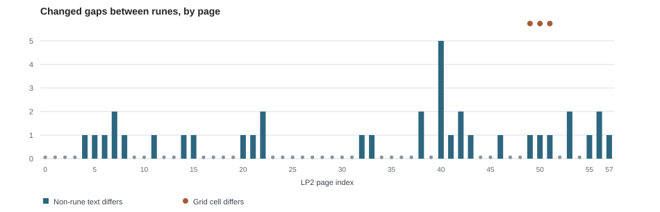
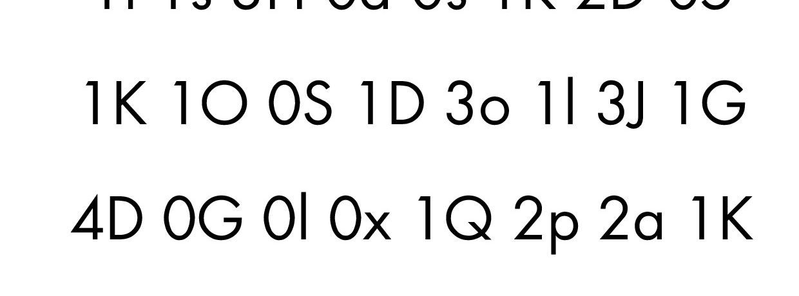
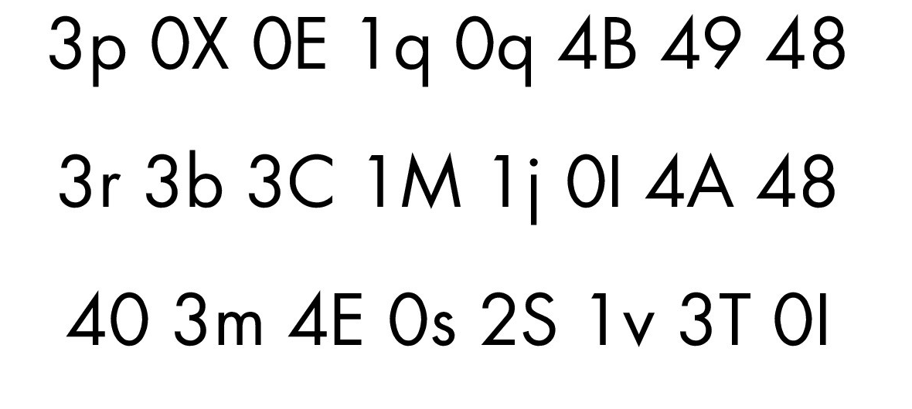
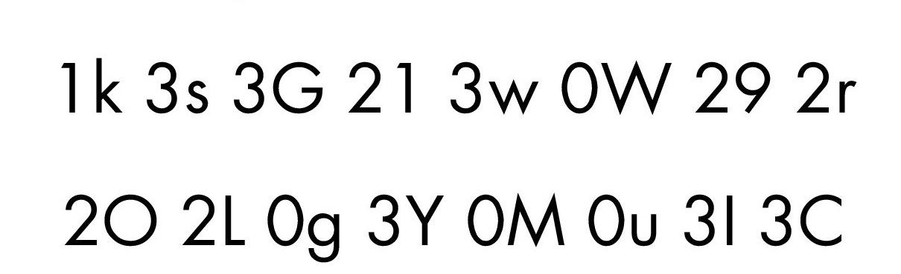

LP2 transcription variants in the seventh-onion archive
Compare all 58 ordered rune streams and the surrounding text; locate five alphanumeric grid-cell disagreements by page, row and column.
On this page
The saved seventh-onion page dump also contains a combined rune transcription for LP2-00–55 and separate text files for LP2-56 and LP2-57. We compared them with Liberpedia's current page text without changing either source. This matters whenever an experiment counts positions, uses word edges, or converts the letter-and-number grids: two researchers can choose the same page image yet feed different text into their scripts.
What matches, and what does not
| Comparison | Result | Meaning |
|---|---|---|
| Ordered runes | 58 of 58 pages match | After removing non-rune characters, the same runes appear in the same order in both text sets. |
| Complete page text | 32 of 58 match | Edge newlines aside, 26 pages differ in punctuation, separators, number/grid content, or other non-rune text. |
| Alphanumeric grid cells | 5 of 256 differ | The disagreements are at fixed rows and columns on LP2-49–51. No cipher interpretation or visual correction is assumed. |

Rune agreement is valuable, but it does not settle where words begin or how a printed I, lowercase l, or digit should be copied. The 58-page comparison table shows which pages differ. The full report records each changed gap between consecutive runes, including its position and both source strings. This is a comparison of two transcriptions; it is not an exhaustive list of contested marks on the images.
Five grid cells to review against the images
| Page | Grid cell | Seventh-onion text | Wiki text |
|---|---|---|---|
| LP2-49 | Row 6, column 6 | 1L | 1l |
| LP2-49 | Row 7, column 3 | 0L | 0l |
| LP2-50 | Row 11, column 6 | 0l | 0I |
| LP2-50 | Row 12, column 5 | 2s | 2S |
| LP2-51 | Row 8, column 7 | 3i | 3I |
Grid rows start with the first grid row on each page, excluding runic rows. The five-cell CSV gives the exact coordinates. We made unenhanced page grabs from the archived seventh-onion JPEGs, not from retyped grid text. Select a grab for its full-size PNG, or open the corresponding complete JPEG to check the surrounding page.

1L/1l and 0L/0l has no visible foot. Download crop · complete archived JPEG.
S, unlike the nearby lowercase s in 0s. Download crop · complete archived JPEG.
i elsewhere in the grid. Download crop · complete archived JPEG.The image supports uppercase 2S at LP2-50 row 12, column 5, and rules out lowercase 3i at LP2-51 row 8, column 7. It also rules out a footed capital L in the two LP2-49 cells. But a bare vertical stem does not uniquely identify lowercase l versus uppercase I in these images; LP2-50 row 11, column 6 remains unresolved between the two recorded readings. The other bare-stem cells should likewise retain that qualification even where one of the transcriptions looks more plausible. These are visual judgments, not an OCR result or a proof of a cipher alphabet.
What changes in a base-60 interpretation?
The declared base-60 conversion treats 0–9 A–Z a–x as values 0–59, then turns each pair into one byte. Under that conditional rule, a change in letter case can change several bits. The table below compares the two transcriptions; it does not choose the correct one.
| Cell | Seventh-onion token → byte | Wiki token → byte | Different bits |
|---|---|---|---|
| LP2-49 6:6 | 1L → 81 | 1l → 107 | 4 |
| LP2-49 7:3 | 0L → 21 | 0l → 47 | 4 |
| LP2-50 11:6 | 0l → 47 | 0I → 18 | 5 |
| LP2-50 12:5 | 2s → 174 | 2S → 148 | 4 |
| LP2-51 8:7 | 3i → 224 | 3I → 198 | 3 |
That is five of 256 positions and 20 of 2,048 rendered bits. A binary image, checksum, byte-frequency count, or candidate decode based on one transcription can therefore differ from the other. Neither version changes the grid dimensions, the presence of 0x and 4F used in the conditional base-60 bound, or the headline count of 161 distinct tokens. Matching those aggregate facts is no reason to treat individual bytes as settled. More I/l stems appear elsewhere in the grid, so the five recorded disagreements are not a complete visual uncertainty inventory.
The capture manifest pins each source JPEG and crop by SHA-256 and records the original pixel rectangles. Download the crop script to regenerate or check the page grabs. The grid guide counts 256 entries and 161 distinct tokens using the wiki text; both text sets produce those same aggregate counts despite five different entries. A matching aggregate statistic cannot settle an individual glyph.
Why the non-rune changes matter
Some differences are small: on LP2-08 one archive separator is a period where the wiki text has a hyphen, and on LP2-56 a hyphen becomes a semicolon. Others are formatting around a number panel or at a page ending. A word-edge or punctuation-aware test can change even though its rune-only frequency count remains identical. If a method strips all separators, say so; if it uses them, cite which transcription and hash supplied them. The transcription-checking guide explains how to turn a disputed mark into a reviewable claim against a particular JPEG.
Preserved inputs and reproduction
Download the source LP2-00–55 combined text, LP2-56 text, and LP2-57 text. Their exact archived bytes and upstream paths are pinned in the source manifest. The associated 0–55 possibilities output is also preserved, but its generated letter strings are not established plaintext or a solution.


For an offline replay, download reference-data.zip and original-images.zip, extracting both into the same folder. Run python scripts/audit_seventh_onion_transcriptions.py --check from that folder. The script verifies the complete source manifest, splits the combined text into 56 pages, compares all 58 ordered rune streams and non-rune gaps, and checks the five grid cells. It does not decide which text version matches each ambiguous image mark. Use the paired image downloads for that separate task.
Manuscript pages discussed
LP2-00 · LP2-01 · LP2-02 · LP2-03 · LP2-04 · LP2-05 · LP2-06 · LP2-07 · LP2-08 · LP2-09 · LP2-10 · LP2-11 · LP2-12 · LP2-13 · LP2-14 · LP2-15 · LP2-16 · LP2-17 · LP2-18 · LP2-19 · LP2-20 · LP2-21 · LP2-22 · LP2-23 · LP2-24 · LP2-25 · LP2-26 · LP2-27 · LP2-28 · LP2-29 · LP2-30 · LP2-31 · LP2-32 · LP2-33 · LP2-34 · LP2-35 · LP2-36 · LP2-37 · LP2-38 · LP2-39 · LP2-40 · LP2-41 · LP2-42 · LP2-43 · LP2-44 · LP2-45 · LP2-46 · LP2-47 · LP2-48 · LP2-49 · LP2-50 · LP2-51 · LP2-52 · LP2-53 · LP2-54 · LP2-55 · LP2-56 · LP2-57